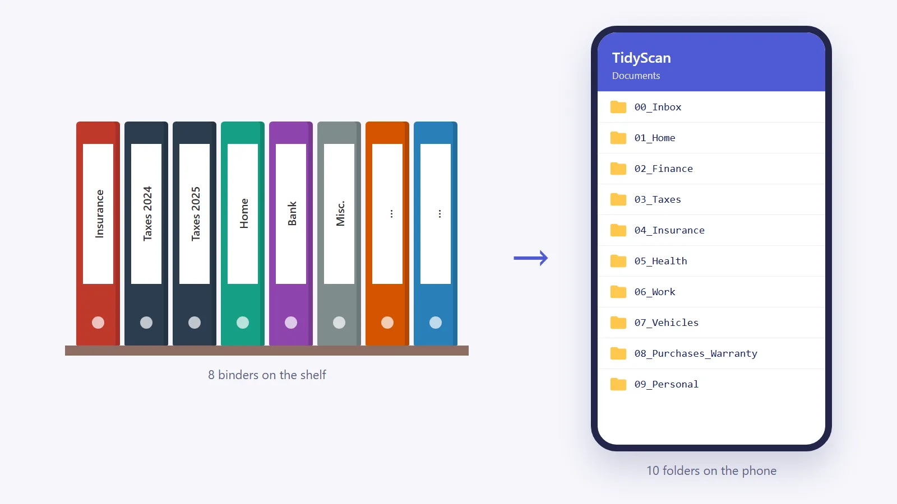

Paperless home office: 5 steps to digital filing
Updated 18 November 2026 · Silvan, founder of TidyScan · 6 min read
A paperless home office doesn't mean that no sheet of paper ever enters the house again. It means paper doesn't pile up: whatever arrives is scanned, named sensibly and filed, and the original goes into the shredder or into one single folder for the few things you keep in the original. You don't need a document scanner or expensive software for this. A phone, a storage place and a routine are enough. Here are the five steps.

Step 1: Choose one storage place
Everything goes to one place. Which one matters less than making the decision:
- Cloud storage such as Google Drive, OneDrive, Dropbox or iCloud: available everywhere, with built-in search.
- Storage at home (NAS): your data stays with you, and you take care of updates yourself.
- Only the phone: simple, but risky without a backup.
Whatever you choose, keep a backup in a second place. A paperless office without a backup is riskier than a paper binder.
Step 2: Create folders
Ten main folders by area of life, two levels at most, one inbox folder for anything unclear. A ready-made template to download is in the guide folder structure template. It takes ten minutes and is one of the most important decisions for your paperless home office.
It isn't set in stone, though. The structure can grow with you: when a lot on the same topic collects in the inbox, it gets its own folder.
Step 3: Set a naming scheme
YYYYMMDD_Sender_Type.pdf, for example 20261118_Seenet_Invoice.pdf. With the date first, every folder sorts itself; with the sender, search finds everything. Rules and examples are in the guide file naming convention.
Step 4: A routine for the post
This is where it's decided whether the paperless office still works after three months. Two approaches have proven themselves:
- Straight away: open the letter, scan, file, paper gone. With a scanner app that takes less than a minute. Your phone is always with you anyway, and what's done no longer weighs on your mind.
- Once a week: all post goes into a tray, and on a fixed day you scan everything at once.
The same goes for invoices by email: they belong in the same place, not in your inbox. How that works is in the guide scan invoices.
What stays in the original: wills, powers of attorney, living wills, certificates, exam results and professional and other qualifications are what the Swiss consumer magazine Beobachter would always keep in the original. I'd add signed contracts for as long as they run. Everything else, such as receipts, monthly invoices, bank statements and subscription contracts, is fine digitally.
Paper with your name, address or account numbers belongs in the shredder, not whole in the paper recycling.
TidyScan is coming to Google Play soon.
Step 5: Tackle the backlog, but not all at once
The most common mistake: wanting to scan ten binders on the first weekend. It takes forever, and on Monday new post arrives.
Better:
- From today, everything new goes through step 4.
- Backlog backwards: first the current year, then the previous one. Older years only if you really still need them.
- Sort out before scanning: what you no longer need, you don't have to scan. How long invoices are worth keeping is in the guide scan invoices.
- One binder per week: after two or three months the cupboard is empty.
What tools does a paperless home office need?
| Tool | What for | Essential? |
|---|---|---|
| Phone with a scanner app | Scan, name, file | yes |
| Storage with backup | Archive | yes |
| Shredder | Paper with personal data | recommended |
| Letter tray | Post until scan day | for the weekly routine |
| Document scanner | Large backlog | no |
With TidyScan, steps 3 and 4 merge: the app scans, suggests a name by scheme and files the document in the right folder, including PDFs from emails. That way you can go paperless without every letter costing you a quarter of an hour.
My paperless home office: straight away instead of a pile
I actually do everything straight away: I scan letters as soon as I've opened them, and I file email invoices directly. If something does get left, it goes into my Friday routine, together with the e-invoices from my bank. From the backlog I only scanned what really mattered.
Conclusion: paperless is a routine, not a project
A paperless home office isn't built in a weekend, but with every letter that no longer piles up. One storage place with a backup, ten folders, a naming scheme and a fixed routine are enough. You work through the backlog at your own pace. Every TidyScan feature is on the home page.
Sources
- Beobachter: So sorgen Sie papierlos für Ordnung (German, retrieved 18 Nov 2026)
Frequent questions
Do I need a document scanner for a paperless home office?
No. A phone is enough for the daily post. A document scanner is only worth it if you want to digitise a large backlog in one go.
What should I keep in the original?
The Swiss magazine Beobachter advises always keeping wills, powers of attorney, living wills, certificates, exam results and qualifications in the original. Add signed contracts for as long as they run.
Is the cloud safe enough for my documents?
Common cloud storage protects your files well if you use a strong password and two-factor sign-in. If you don't want a cloud, store locally and make regular backups.
How long does it take to go paperless?
Setting up takes half an hour. Your daily post is paperless from day one; the backlog takes a few weeks to months, depending on how much there is.